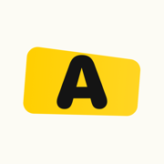

a word ladder puzzle
solved in 4 · that's par
Get from the start word to the goal.
Change one letter at a time.
Every step has to be a real word.

Coming to iPhone and iPadan App Store release is on the way